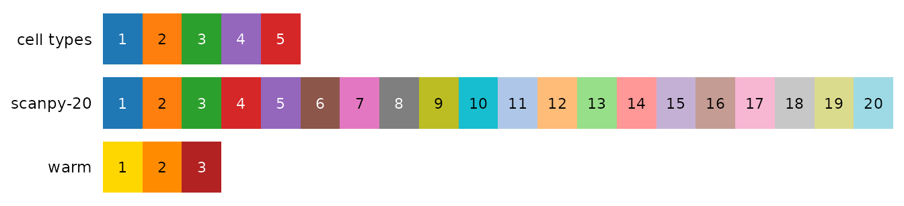

bioToolkit has 41 palettes, taken from published sources and credited
below. Every plot has one cols argument that takes a
palette name, so this page is the menu: pick a palette by name, or pick
colours from it by their index.
| To | Use |
|---|---|
| colour a plot with a palette | cols = "okabe-ito" |
| reverse a palette | add _r to its name:
cols = "viridis_r"
|
| take some colours, in your order |
bt_palette("scanpy-20")[c(1, 3, 2)] (indices as shown
below) |
get n colours |
bt_palette("seq-blue", n = 5) (qualitative palettes
give their first n) |
| see palettes, or your own colours, in R | show_palettes() |
| list names, types and sources | list_palettes() |
| check colours for colour blindness | check_palette() |
Hover a swatch to see its index and hex code. Qualitative palettes are for groups (cell types, conditions); sequential palettes for values from low to high (expression, significance); diverging palettes for values on both sides of a centre (fold changes, z-scores, NES).
Defaults
The plots use these palettes when cols is not given:
| Values | Default | Used by |
|---|---|---|
| Groups, up to 20 | scanpy-20 |
every plot coloured by group |
| Groups, 21 to 102 | scanpy-102 |
every plot coloured by group |
| Expression on an embedding | plasma_r |
FeaturePlot_bioToolkit() |
| Mean expression, not scaled | viridis_r |
DotPlot_bioToolkit() |
| Mean expression, not scaled, heatmap | magma |
DoHeatmap_bioToolkit() |
| Significance, one-directional values |
seq-purple, seq-blue, … |
enrichment plots (one hue per panel), plot_pca(),
plot_variance_explained()
|
| Signed values (z-scores, fold changes, NES) | blue-magenta |
dot plots, DE plots, enrichment NES, density differences, diverging feature plots |
| z-scores of single cells | teal-yellow |
DoHeatmap_bioToolkit() |
Qualitative
For groups. They are never interpolated: a colour in between two
group colours would read as an intermediate group, so
bt_palette(name, n) stops when a palette has fewer than
n colours.
scanpy-2020 colours
scanpy-20-cb20 colours
scanpy-102102 colours
okabe-ito8 colours
tol-bright6 colours
tol-vibrant6 colours
tol-muted9 colours
tol-light8 colours
tol-high-contrast3
colours
npg10 colours
aaas10 colours
nejm8 colours
lancet9 colours
jama7 colours
jco10 colours
tableau-1010 colours
polychrome-3636 colours
alphabet26 colours
paired12 colours
Sequential
For values from low to high. The seq-* palettes are
single-hue ramps trimmed to the same lightness range (CIE L* 80 to 30):
not so pale that low values vanish on white, not so dark that the hue is
lost, and the same value has the same lightness whatever the hue, so
that panels in different hues stay comparable.
seq-purple9 colours
seq-blue9 colours
seq-teal9 colours
seq-green9 colours
seq-orange9 colours
seq-red9 colours
seq-magenta9 colours
viridis256 colours
magma256 colours
inferno256 colours
plasma256 colours
cividis256 colours
mako256 colours
rocket256 colours
tol-iridescent23 colours
tol-ylorbr9 colours
Diverging
For values on both sides of a centre, drawn in the middle colour. The
plots put the centre at 0 and stretch each side to its own end (see Colours). Index 1 is the low end; for a
scale of your own, the low, middle and high colours are e.g.
bt_palette("tol-burd")[c(1, 5, 9)].
blue-magenta11 colours
blue-purple11 colours
teal-yellow11 colours
tol-sunset11 colours
tol-burd9 colours
tol-prgn9 colours
Your own colours
show_palettes() draws palettes by name, a vector of your
own colours, or a list of both, with the index of each colour. For
example, colours picked for cell types next to the palette they came
from:
cell_cols <- bt_palette("scanpy-20")[c(1, 2, 3, 5, 4)]
names(cell_cols) <- c("CD4 T", "CD14 Mono", "B", "CD8 T", "NK")
show_palettes(list(
"cell types" = cell_cols,
"scanpy-20",
warm = c("gold", "darkorange", "firebrick")
))
Name the colours by group and pass them as cols, so that
each cell type keeps its colour in every figure;
check_palette(cell_cols) flags pairs that become hard to
tell apart with colour blindness (see Colour vision
deficiency).
Adding a palette
New palettes come from a citable source, with hex values copied from
it (or from a package that reproduces it), never retyped from memory.
Each is an entry of palette_list() in
R/palettes.R, with its colours, type and source; the
package tests check every entry.